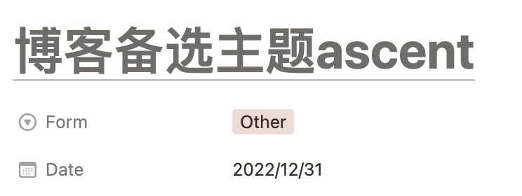

con's E-Notebook写在前面 2024-06-27
结束大三下的最后一门考试后，实在不想即刻又投入到下一阶段的学习里，就把这个“个人博客”弄了出来，其实应该就只是个用来倒学习垃圾的地方。
从开始折腾到把网站成功上线用了3h，但这件事本身躺在我的任务列表里已经有一年半了。
最后倒也没有用上这个主题（笑）
印象里一年半以前想要弄一个个人博客时，愿望还很宏大，而这次仅仅是因为某一天在wsl的网络出现问题的时候，只花了不到10分钟就配好了终端代理，结束时恍惚地想到，在年初我还因为相同的问题重装了一次电脑……（那时候甚至没意识到不同的shell之间语法有区别）
现在想想当时真是蠢的不可思议。而没有被我记住的愚蠢时刻，应该还有很多吧。
抱着这样的想法，我翻到了notion里的这一条记录，想起了当时不知道出于什么原因选择了Hexo做框架，去官网找到了过时已久，满是错误的doc 😅，完结了这个拖延已久的任务。